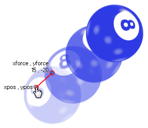

physics_apply_impulse(xpos, ypos, ximpulse, yimpulse)
| Argumento | Descripción |
|---|---|
| xpos | La coordenada x en la sala donde se aplicará el impulso |
| ypos | La coordenada y en la sala donde se aplicará el impulso |
| ximpulse | el componente x del vector de impulso |
| yimpulse | el componente y del vector de impulso |
Devoluciones: N / A
No solo puedes aplicar fuerza y gravedad a un objeto con la física en GameMaker Studio 2 sino que también puedes aplicar un impulso. Esto es ligeramente diferente de una fuerza porque cuando se aplica afectará inmediatamente la velocidad y, potencialmente, el par (o "giro") del objeto, particularmente si el punto elegido para aplicar el impulso no está alineado con el centro. de masa (nota: ¡el centro de masa no es necesariamente el mismo que el origen!). Aquí hay una ilustración:

Como puede ver, el jugador ha hecho clic en la pelota y esto le ha dado el impulso de moverse hacia la esquina superior derecha, girando sobre la marcha. El impulso exacto está definido por el vector que obtenemos de los componentes ximpulse / yimpulse en relación con las coordenadas xpos / ypos, lo que simplemente significa que el impulso se calcula como la distancia de xpos / ypos a ximpulse / yimpulse en Newtons, y la dirección es el ángulo que obtenemos de xpos / ypos a ximpulse / yimpulse.
NOTA: El mundo de la física utiliza los contadores para todos sus cálculos, y la proporción de píxeles por metro se define en el editor de la sala o usando physics_world_create.
if mouse_check_button_pressed(mb_left)
{
with (place_meeting(mouse_x, mouse_y, all))
{
physics_apply_impulse(mouse_x,
mouse_y, -10 + irandom(20), -10 + irandom(20));
}
}
El código anterior aplicará un impulso con un vector aleatorio a una instancia que está en la posición del mouse cuando se presiona el botón izquierdo.